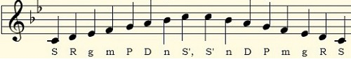
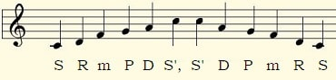
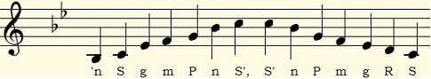
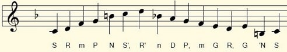
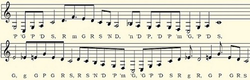
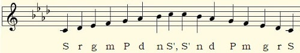

Ragas Classified by Structure
~A selection of light ragas~
This page gives you an introduction to the structures of ragas using a few light ragas as examples – Kafi, Durga, Dhani, Des, Pahadi, Bhairavi and Bahar. Lively, nimble, and more suited to delicate ornamentation, these ragas are a great introduction to Hindustani (North Indian) classical music if you are new to it.
In terms of raga structure, there are symmetric, asymmetric, mixed (mishra), circuitous (vakra), and compound (jod) ragas.
Symmetric ragas have the same number of notes in both the ascending and descending scales: five-five (audav-audav), six-six (shadav-shadav), or seven-seven (sampoorna). Additionally, they use the same notes in both the ascending and descending scales. Kafi and Durga are examples of symmetric ragas.
Raag Kafi (sampoorna)
Raag Kafi uses all seven notes in both its ascending and descending scales, so it is a sampoorna raga (sampoorna means "complete"). Additionally, the same variants of those notes, Sa Re ga ma Pa Dha ni (1 2 ♭3 4 5 6 ♭7), are used in both the ascending and descending scales, making it a symmetric raga.
Raag Kafi is pretty with wistful undertones and retains the rustic flavor of its folk roots. It is a very popular raga for "hori," which are songs sung during the festival of Holi. In a classical setting, Raag Kafi is typically performed in the evening hours.

Raag Durga (audav-audav)
Raag Durga uses five notes in both its ascending and descending scales, which makes it an audav-audav (i.e., pentatonic-pentatonic) raga. Again, the same notes and the same variants of those notes, Sa Re ma Pa Dha (1 2 4 5 6), are used in both the ascending and descending scales, making it a symmetric raga.
To me, Raag Durga has the quality of innocence and purity, but the traditional emotion associated with it is valor. Being a relatively recent import from Carnatic (South Indian) classical music, it is not yet counted among the big Hindustani ragas, but perhaps that's just a question of time. Durga is performed from late evening to midnight.

Asymmetric Ragas
Most ragas are not symmetric. One reason for asymmetry is a different number of notes in the ascending and descending scales. In such cases, the ascending scale usually has fewer notes, because notes are skipped on the way up more often than on the way down, as in the case of Raag Dhani, which skips Re (2) on the way up but uses it on the way down.
Raag Dhani (audav-shadav)
Raag Dhani (named after its parent raga Dhanashree) is soulful and romantic in a dreamy, wholesome sort of way. It is usually performed at medium to lively tempos. It is associated with the rains.

Raag Des (audav-sampoorna)
True to its name ("des" means countryside), Raag Des lends itself beautifully to light classical genres that are closely associated with folk music traditions. It is, however, a very important raga in classical music too. Raag Des is also associated with the rains.

Mixed Ragas (mishra raag)
In mainstream classical music, artists adhere to the framework of the raga quite strictly. But in light & semi-classical settings, they can afford to be more playful, such as by mixing in additional notes. In such cases, the adjective mishra (mixed) is added to the name of the raga. So you can have performances in Mishra Kafi or Mishra Des and so on. You don't often hear of mixed versions of the more serious ragas, because such ragas are not usually performed in lighter settings.
Meanwhile, some ragas are performed almost exclusively as mixed ragas. Two such ragas are Pahadi and Bhairavi, both of which can get away with using just about any note in the octave while still retaining their separate identities.
Raag Pahadi

Raag Bhairavi

Let us meet agin in another lesson, Till then Happy Fluting!!